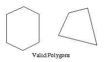

Drawing Polygons
Idea:
Polygons are the areas enclosed by single closed loops of line segments, where the line segments are specified by the vertices at their end points. We define the vertices of a polygon by using glVertex2f(x,y) or glVertex3f(x, y, z) as when working with points and lines, the difference being that we have to change the mode in the glBegin(Glenum mode) to be GL_POLYGON mode. In general polygons can be complicated, so OpenGL makes some strong restrictions on what may constitute a primitive polygon.

Convexity:
A region is convex, if given any two points in the interior, the line segment joining them is also in the interior. The program to your left shows some valid and invalid polygons. Many real-world surfaces consist of non-simple polygons non-convex polygons or polygons with holes. All such polygons can be formed from unions of simple convex polygons.
Experiment